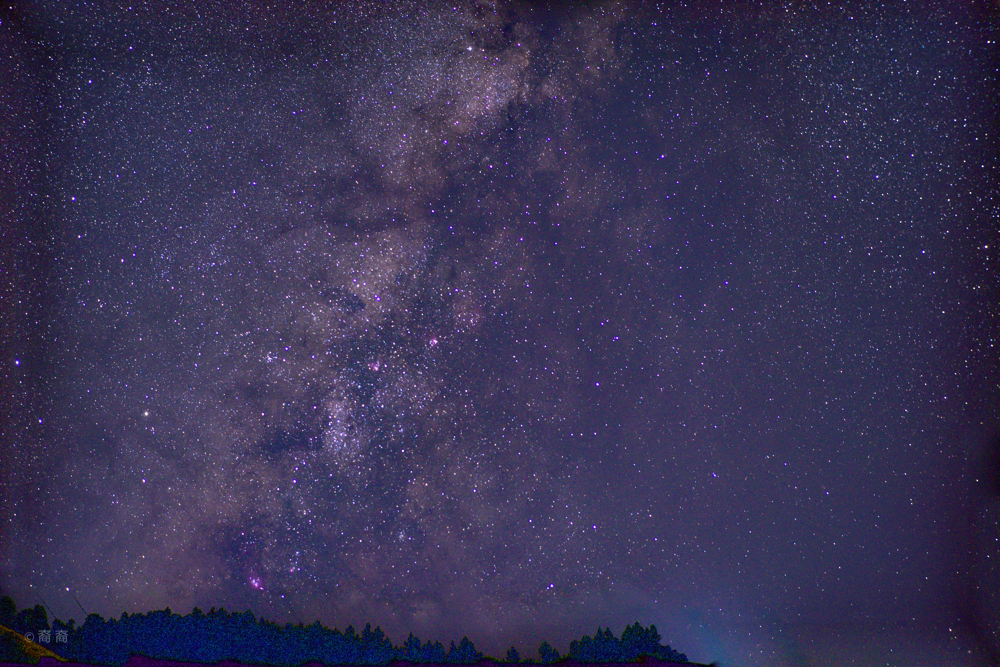
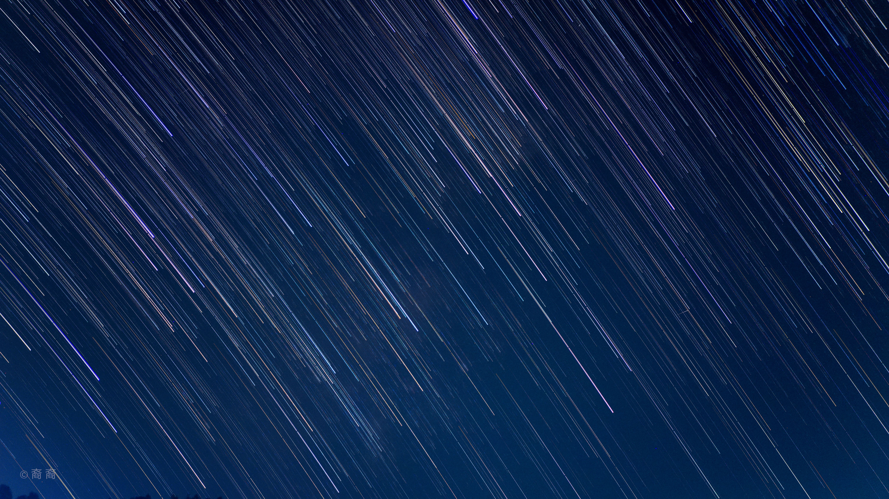

用镜头观察世界，用影像收藏日常。这里记录光线、风景、人物，以及那些值得停留的瞬间。
每一张照片，都是一次观察。点击作品可放大欣赏。


用动态影像记录更多瞬间。点击播放，在这里观看完整视频。
VIDEO · 001 最新视频上线，求关注！ 在哔哩哔哩打开 ↗
你好，我是裔扬。一名热爱摄影的学生，喜欢用镜头记录生活中的光影与情绪。
我相信好的照片不只是画面，更是某一刻真实的感受。这个空间会持续更新我的摄影作品与创作记录。
感谢你来到我的影像世界。欢迎交流摄影、分享灵感。